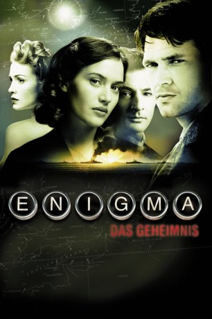

#1415 Enigma - Das Geheimnis
Alternativ: Enigma
 
 IMDB-Wertung: 6.4 / 10
IMDB-Wertung: 6.4 / 10  Metascore: 64
Metascore: 64 
Britischer Thriller von Micheal Apted, der während des Zweiten Weltkrieges spielt. Tom (Dougray Scott) ist beruflich damit beschäftigt die mit dem Verschlüsselungssystem Enigma versehenen Funksprüche der Deutschen zu dechiffrieren. Privat ist er auf der Suche nach seiner Geliebten Claire (Saffron Burrows), die verschwunden ist. Zusammen mit ihrer Freundin Hester macht er eine wichtige Entdeckung.
Jahr: 2001
Dauer: 119 Minuten
FSK: 12
Land: England Studio: Senator FilmTonspuren:
Untertitel:
Auflösung: 720p (1280x544) Größe: 3584 MB
Genre: Drama, Mystery, Liebe, Thriller, Krieg
Regisseur:  Michael Apted
Michael Apted
Drehbuch: Robert Harris, Tom Stoppard
Soundtrack: John Barry
Darsteller:
 Dougray Scott als Thomas Jericho
Dougray Scott als Thomas Jericho Kate Winslet als Hester Wallace
Kate Winslet als Hester Wallace Saffron Burrows als Claire
Saffron Burrows als Claire Jeremy Northam als Wigram
Jeremy Northam als Wigram Nikolaj Coster-Waldau als Puck
Nikolaj Coster-Waldau als Puck Tom Hollander als Logie
Tom Hollander als Logie Donald Sumpter als Leveret
Donald Sumpter als Leveret Matthew Macfadyen als Cave
Matthew Macfadyen als Cave Richard Leaf als Baxter
Richard Leaf als Baxter Richard Katz als De Brooke
Richard Katz als De Brooke Robert Pugh als Skynner
Robert Pugh als Skynner Corin Redgrave als Admiral Trowbridge
Corin Redgrave als Admiral Trowbridge Nicholas Rowe als Villiers
Nicholas Rowe als Villiers Angus MacInnes als Commander Hammerbeck
Angus MacInnes als Commander Hammerbeck- Michael Troughton als Mr. Mermagen
 Edward Hardwicke als Heaviside
Edward Hardwicke als Heaviside Anne-Marie Duff als Kay
Anne-Marie Duff als Kay Tim Bentinck als U-boat Commander
Tim Bentinck als U-boat Commander- Emma Davies als Pamela
 Adolf Hitler als Himself , archive footage, uncredited
Adolf Hitler als Himself , archive footage, uncredited- Mick Jagger als Soldier in Bar , uncredited
- Ian Felce als Proudfoot
- Bohdan Poraj als Pinker
- Paul Rattray als Kingcome
 Tom Fisher als Upjohn
Tom Fisher als Upjohn- Mary MacLeod als Mrs. Armstrong
- Rosie Thomson als Duty Clerk
- Emma Buckley als Land Army Girl
- Mirjam de Rooij als Lady Lodger
- Adrian Preater als RAF Corporal
- Edward Woodall als Bletchley Brain
- Hywel Simons als Male Lodger
- Martin Glyn Murray als RAF Officer
- Wayne Docksey als Police Dog Handler , uncredited
- Joseph Goebbels als Himself - Accompanying Hitler , archive footage, uncredited
- Viktor Lutze als Himself - Accompanying Hitler , archive footage, uncredited, unconfirmed
- Lee Montague als (uncredited
- Tim Pruce als RAF Officer , uncredited
- Julius Schaub als Himself - Accompanying Hitler , archive footage, uncredited
- Werner von Blomberg als Himself - Accompanying Hitler , archive footage, uncredited
- Werner von Fritsch als Himself - Accompanying Hitler , archive footage, uncredited, unconfirmed
- Bevan Walsh als RAF Guard , uncredited
Datei: X:\2001\Enigma - Das Geheimnis (2001, FSK12, 1280x544).mkv seit 30.06.2015
Festplatte: HD 1996-2002
 Es gibt insgesamt 102 Filme in der Gruppe '2001'
Es gibt insgesamt 102 Filme in der Gruppe '2001'